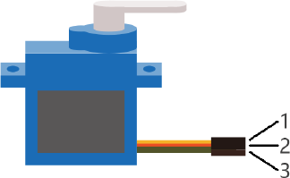

ESP32-S3 board
The brain that runs your uploaded sketch.
ESP32-S3 Lab · Day 24 of 30
Today the board gets a helm. You wire the knob from Day 13 and the servo from Day 23 into one circuit and let one command them together. The knob counts in 0 to 4095, the servo answers in 0 to 180, and a single map() call is the joint between the two scales — turn the knob and the horn swings with your hand, live. Serial Monitor prints the raw reading and the finished angle side by side so you can watch each translation land.
TSK-DAY24-SERVOKNOB
Hand this to an agent so it can pull the lesson packet and coach you step by step.
01 First, know the pieces
Six things, and you've met them all. Tap Define on any part you'd like a refresher on — the answer opens as a field note you can read and dismiss without losing your place.
The brain that runs your uploaded sketch.

Spreads the pins into rows you can reach and label.

The motor that holds whatever angle you command.

The knob — a resistor track with a sliding tap.

Temporary, solder-free connections.

Uploads the sketch and opens Serial Monitor.
02 Make the physical circuit
The official Freenove diagram is your chart — schematic on top, the same circuit built on a breadboard below. Click it to enlarge. Two familiar circuits share the board today: the knob on one side, the servo on the other, joined through the code.
Two power rails, each to its own device. The servo's motor drinks from the 5V pin; the potentiometer stays on 3.3V so GPIO 14 reads within its limit. Keep the two supplies straight, never twist the horn by hand while it's powered, and unplug USB before you move any wire.
03 One action at a time
This is the main path — you can finish the day without opening a single field note. Tap each step as you go to keep your place.
Seat the ESP32-S3 on the GPIO extension board and keep USB unplugged while you wire.
Push the potentiometer into the breadboard so each of its three pins has its own row.
Wire the pot's outer pins to 3.3V and GND, then run its middle pin to GPIO 14.
Connect the servo's lead — orange signal to GPIO 21, red to 5V, brown to GND.
Press a horn onto the servo's output shaft so the motion is easy to see.
Compare every wire to the chart before you plug in USB.
Open Sketch_17.2_Control_Servo_by_Potentiometer.ino in Arduino IDE and upload it.
Open Serial Monitor and set the baud rate to 115200.
Turn the knob slowly end to end and watch the horn follow your hand.
04 Read just enough code
The loop is five working lines — read the knob, print, map, steer, print again. Switch to MicroPython if you'd rather see the same idea in Python — the wiring never changes.
#define SERVO_PIN 21 //define the pwm pin
#define SERVO_CHN 0 //define the pwm channel
#define SERVO_FRQ 50 //define the pwm frequency
#define SERVO_BIT 12 //define the pwm precision
#define ADC_PIN 14 //define the adc pin
void setup() {
servo_set_pin(SERVO_PIN);
Serial.begin(115200);
}
void loop() {
// read the value of the potentiometer (value between 0 and 4095)
int potVal = analogRead(ADC_PIN);
Serial.printf("potVal_1: %d\t",potVal);
// scale it to use it with the servo (value between 0 and 180)
potVal = map(potVal, 0, 4095, 0, 180);
// set the servo position according to the scaled value
servo_set_angle(potVal);
Serial.printf("potVal_2: %d\r\n",potVal);
delay(15);// wait for the servo to get there
}
void servo_set_pin(int pin) {
ledcAttachChannel(pin, SERVO_FRQ, SERVO_BIT, SERVO_CHN);
}
void servo_set_angle(int angle) {
if (angle > 180 || angle < 0)
return;
long pwm_value = map(angle, 0, 180, 103, 512);
ledcWrite(SERVO_PIN, pwm_value);
}map(potVal, 0, 4095, 0, 180)Rescales the knob's raw reading onto the servo's range — 0 stays 0, 4095 becomes 180, and everything between lands in proportion. map(angle, 0, 180, 103, 512)The second map turns the angle into a duty value — the width of the pulse that tells the servo where to hold. ledcAttachChannel(pin, SERVO_FRQ, SERVO_BIT, SERVO_CHN)Sets GPIO 21 up as 50 Hz PWM with 12-bit precision — the timing a hobby servo expects. Serial.printf("potVal_1: %d\t",potVal)Prints the raw reading before the mapping, so each line pairs the input with its finished angle. Optional side path · same circuit
servo=myServo(21)
adc=ADC(Pin(14))
adc.atten(ADC.ATTN_11DB)
adc.width(ADC.WIDTH_12BIT)
adcValue=adc.read()
angle=(adcValue*180)/4096
servo.myServoWriteAngle(int(angle))
time.sleep_ms(50)angle=(adcValue*180)/4096The same rescale as the Arduino map — one line of arithmetic from reading to angle.servo.myServoWriteAngle(int(angle))The helper in myservo.py builds the matching pulse and sends it to GPIO 21.Same pins, same behaviour. Copy myservo.py onto the board alongside the script — the import needs it there. Run it in Thonny if MicroPython is set up; otherwise skip it — it should never block the Arduino-first path.
05 Understand, don't memorise
Today is the first time an analogue input drives an analogue output, and the idea behind it is bigger than a knob and a servo. A sensor reports on its own scale, an actuator obeys on a different one, and the two scales rarely line up. map() is the piece that connects them. Read the input, map it onto the output's range, write the output, and repeat- that read-map-write loop is the shape of nearly every hand control you will ever build.
The knob reports a number from 0 to 4095; the servo obeys an angle from 0 to 180. The sensor's raw numbers mean nothing to the actuator as they stand — 4095 is not an angle.
map(reading, 0, 4095, 0, 180) sends each point on the input range to the matching point on the output range, in proportion- 0 to 0, 4095 to 180, the middle to 90. Change the sensor or the actuator and the same call still bridges them; only the four numbers change.
The loop reads the knob and writes the servo on every trip, dozens of times a second. Because the angle is recomputed from the live reading each pass, the horn follows your hand the instant you move it.
The knob commands, the servo obeys, and the loop keeps closing the distance between them. That read-map-write triangle is a control system in miniature, and it scales to any sensor paired with any actuator.
read input → map(input, in-low, in-high, out-low, out-high) → write output, every loop
map() is a straight-line rescale between two ranges. It handles any pair of scales with the same four arguments — including reversed ranges and narrowed ones — which is exactly what makes it reusable across every sensor and actuator you meet.
The sketch actually maps twice- reading to angle, then angle to a duty value from 103 to 512 for the PWM hardware. At 50 Hz with 12-bit precision, duty 103 is roughly a 0.5 ms pulse and 512 is roughly 2.5 ms — the width, repeated every 20 ms, is the position command the servo holds. Same universal joint, one border further in.
06 Know it worked
The horn tracking your hand is the payoff; the serial pairs are the proof. Success and recovery sit side by side, so you never have to go hunting when something looks off.
Each line pairs the raw reading with its mapped angle — one end of the knob prints near 0 and 0, the centre near 2048 and 90, the far end near 4095 and 180.
07 Make the idea yours
Same working circuit, one line rewritten two ways. The point of each is to predict the horn's behaviour from the four map() numbers before you upload, then watch the serial pairs prove you right or catch you out. It fits inside today's 20 minutes.
Change the first map() to map the reading onto 45 to 135 — a 90° window around centre. Predict first- where do the two ends of the knob point now, and what will potVal_2 print at each end? Upload and check the serial pairs against your guess.
Swap the output ends so the reading maps onto 180 then 0. Before uploading, call it- which way does the horn swing when you turn the knob clockwise now? One line runs the servo against the knob.
Put the original 0 to 180 mapping back, then find the knob positions that print potVal_2 near 0, 90, and 180 and mark each with a sliver of tape. You've calibrated a control by reading its own output.
08 Learn it with a hand on the tiller
Every lesson ships with a code and a machine-readable packet, so an agent can guide you with full context.
TSK-DAY24-SERVOKNOB
How the agent should behave: guide one wire at a time, wait for you to confirm, and always check wiring, board, port, and baud rate before changing code. Once it runs, teach the real idea- an input and an output live on different scales, map() is the joint between them, and reading then writing every loop makes the horn track the knob live.